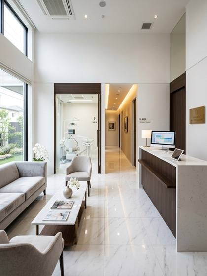
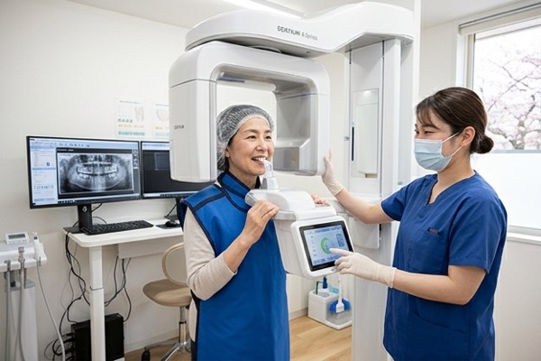
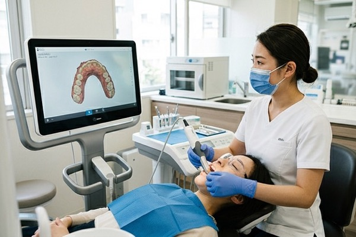
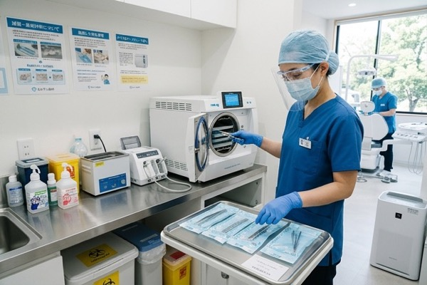
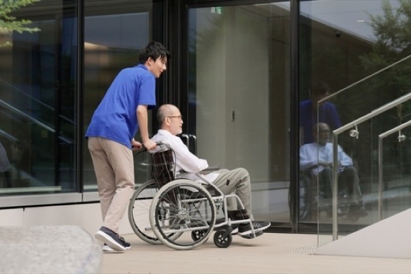
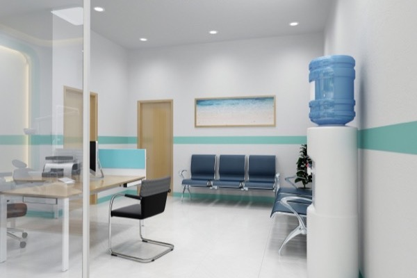

医院紹介
安心して通える環境づくり
ABOUT US
当院について

院内コンセプト
ここに来てよかった、
そう思える歯科医院
東都中央歯科医院は、患者様が安心して通い続けられる歯科医院を目指しています。 田町駅から徒歩3分という好アクセス、24時間WEB予約、クレジットカード対応など、 通院の障壁を取り除く工夫を随所に施しています。
院内は白を基調とした清潔感あふれる空間。広々とした待合室でリラックスしてお待ちいただけます。 個室診察室でプライバシーに配慮しながら、丁寧な治療を提供します。
FACILITY
院内設備

デジタルレントゲン
被曝量を従来比80%以上削減したデジタルレントゲンを採用。高精細な画像で精密な診断が可能です。

口腔内スキャナー
3Dスキャンによる精密な型取りが可能。型取りの不快感を大幅に軽減します。

滅菌・感染対策
EU基準に適合した高圧蒸気滅菌器を導入。使い捨て器具の徹底使用で院内感染を防ぎます。

バリアフリー設計
車いすでのご来院も安心。段差のない設計と広い通路で、すべての患者様が快適に過ごせます。
GALLERY
院内ギャラリー
